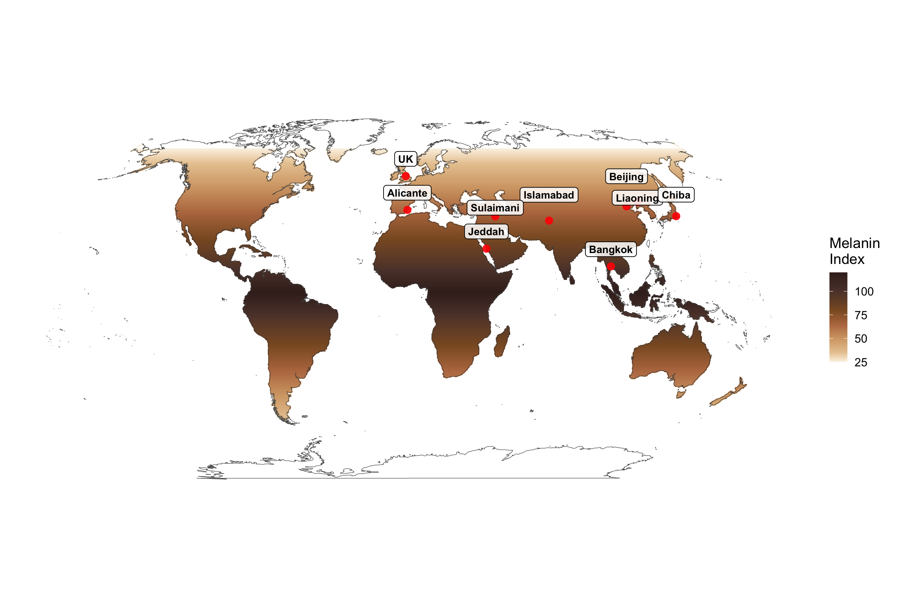

Last updated: 2025-12-16
Checks: 6 1
Knit directory: SkinOptics/
This reproducible R Markdown analysis was created with workflowr (version 1.7.1). The Checks tab describes the reproducibility checks that were applied when the results were created. The Past versions tab lists the development history.
The R Markdown is untracked by Git. To know which version of the R
Markdown file created these results, you’ll want to first commit it to
the Git repo. If you’re still working on the analysis, you can ignore
this warning. When you’re finished, you can run
wflow_publish to commit the R Markdown file and build the
HTML.
Great job! The global environment was empty. Objects defined in the global environment can affect the analysis in your R Markdown file in unknown ways. For reproduciblity it’s best to always run the code in an empty environment.
The command set.seed(20251211) was run prior to running
the code in the R Markdown file. Setting a seed ensures that any results
that rely on randomness, e.g. subsampling or permutations, are
reproducible.
Great job! Recording the operating system, R version, and package versions is critical for reproducibility.
Nice! There were no cached chunks for this analysis, so you can be confident that you successfully produced the results during this run.
Great job! Using relative paths to the files within your workflowr project makes it easier to run your code on other machines.
Great! You are using Git for version control. Tracking code development and connecting the code version to the results is critical for reproducibility.
The results in this page were generated with repository version 32c3e8f. See the Past versions tab to see a history of the changes made to the R Markdown and HTML files.
Note that you need to be careful to ensure that all relevant files for
the analysis have been committed to Git prior to generating the results
(you can use wflow_publish or
wflow_git_commit). workflowr only checks the R Markdown
file, but you know if there are other scripts or data files that it
depends on. Below is the status of the Git repository when the results
were generated:
Ignored files:
Ignored: analysis/skin-map_cache/
Ignored: data/worldclim/
Untracked files:
Untracked: analysis/skin-map.Rmd
Unstaged changes:
Modified: .DS_Store
Note that any generated files, e.g. HTML, png, CSS, etc., are not included in this status report because it is ok for generated content to have uncommitted changes.
There are no past versions. Publish this analysis with
wflow_publish() to start tracking its development.
library(sf)Linking to GEOS 3.13.0, GDAL 3.8.5, PROJ 9.5.1; sf_use_s2() is TRUElibrary(terra)terra 1.8.86library(ggplot2)
library(rnaturalearth)
library(dplyr)
Attaching package: 'dplyr'The following objects are masked from 'package:terra':
intersect, unionThe following objects are masked from 'package:stats':
filter, lagThe following objects are masked from 'package:base':
intersect, setdiff, setequal, union# 1) Basemap - use coastlines instead of country polygons to avoid border artifacts
world <- ne_coastline(scale = "medium", returnclass = "sf") |>
st_make_valid()
# For masking, we still need land polygons (but won't draw borders)
# Filter out small islands by area (keep only larger landmasses)
land <- ne_download(scale = "medium", type = "land", category = "physical", returnclass = "sf") |>
st_make_valid()Reading 'ne_50m_land.zip' from naturalearth...land$area <- st_area(land)
land <- land[land$area > units::set_units(5e10, "m^2"), ] # Keep landmasses > 50,000 km²
# 2) Actual study site locations
points_overlay <- data.frame(
lat = c(53.3811, 38.3452, 39.9042, 41.8057, 35.6074, 33.6844, 13.7563, 35.5606, 21.4858),
lon = c(-1.4701, -0.4810, 116.4074, 123.4328, 140.1063, 73.0479, 100.5018, 45.4300, 39.1925),
label = c("UK", "Alicante", "Beijing", "Liaoning", "Chiba", "Islamabad", "Bangkok", "Sulaimani", "Jeddah"),
location = c("UK", "Alicante, Spain", "Beijing, China", "Liaoning, China", "Chiba, Japan", "Islamabad, Pakistan", "Bangkok, Thailand", "Sulaimani, Iraq", "Jeddah, Saudi Arabia"),
nudge_y = c(800000, 800000, 1400000, 200000, 1000000, 1200000, 800000, 400000, 800000)
)
pts <- st_as_sf(points_overlay, coords = c("lon","lat"), crs = 4326)
# 3) Project everything to match the raster projection
world_robin <- st_transform(world, "ESRI:54030")
pts_robin <- st_transform(pts, "ESRI:54030")
# 4) Create a placeholder raster masked to land only (like Jablonski maps)
# First create in WGS84 with high resolution to avoid artifacts
r_wgs84 <- rast(nrows = 720, ncols = 1440)
crs(r_wgs84) <- "+proj=longlat +datum=WGS84"
ext(r_wgs84) <- c(-180, 180, -90, 90)
# Create a latitude-based gradient (darkest between 15°N-10°S, gradient to 25 at poles)
# Melanin Index scale: 25 (lightest) to 120 (darkest between 15°N-10°S)
lat_values <- yFromRow(r_wgs84, 1:nrow(r_wgs84))
# Anchor: 15°N to 10°S gets max values (95-120)
# North of 15°N: gradient from 95 down to 25 at 66.5°N
# South of -10°S: gradient from 95 down to 25 at -60°S
lat_gradient <- sapply(lat_values, function(lat) {
if (lat >= -10 && lat <= 15) {
# Peak zone: -10°S to 15°N, values 95-120 (highest at ~2.5°N)
120 - abs(lat - 2.5) * (25 / 12.5)
} else if (lat > 15) {
# North of 15°N: linear gradient from 95 at 15°N to 25 at 66.5°N
95 - (lat - 15) * (70 / 51.5)
} else {
# South of -10°S: linear gradient from 95 at -10°S to 25 at -60°S
95 - (abs(lat) - 10) * (70 / 50)
}
})
# Clamp values to 25-120 range
lat_gradient <- pmax(25, pmin(120, lat_gradient))
r_wgs84[] <- rep(lat_gradient, each = ncol(r_wgs84))
# Defer masking until after reprojection to avoid alignment artefacts
# Exclude Antarctica by filtering latitudes south of -60°
land_centroids <- st_coordinates(st_centroid(st_geometry(land)))
land_no_antarctica <- land[land_centroids[,2] > -60, ]
# Project to Robinson using bilinear interpolation to avoid creating
# whole-row NAs from resampling
r_robin <- project(r_wgs84, "+proj=robin +datum=WGS84", method = "bilinear")
# Mask to land areas in the Robinson CRS (exclude Antarctica)
land_robin_vect <- vect(st_transform(land_no_antarctica, "+proj=robin +datum=WGS84"))
r_robin <- mask(r_robin, land_robin_vect)
# Remove Arctic regions (latitude > 66.5 N) by masking with an inverse bbox
arctic_bbox <- st_bbox(c(xmin = -180, xmax = 180, ymin = 66.5, ymax = 90), crs = st_crs(4326))
arctic_poly <- st_as_sfc(arctic_bbox)
arctic_robin <- st_transform(st_as_sf(arctic_poly), "+proj=robin +datum=WGS84")
r_robin <- mask(r_robin, vect(arctic_robin), inverse = TRUE)
# Fill small isolated NA gaps using a 3x3 focal mean, then replace remaining
# isolated NAs where a local mean exists
r_robin_filled <- focal(r_robin, w = matrix(1,3,3), fun = mean, na.policy = "only", na.rm = TRUE)
r_robin[is.na(r_robin)] <- r_robin_filled[is.na(r_robin)]
# Convert raster to data frame for ggplot
r_df <- as.data.frame(r_robin, xy = TRUE, na.rm = TRUE)
names(r_df)[3] <- "melanin_index"
ggplot() +
# Melanin Index surface (use geom_tile for better edge handling)
geom_tile(data = r_df, aes(x = x, y = y, fill = melanin_index)) +
# Coastlines on top (no country borders)
geom_sf(data = st_transform(world, "+proj=robin +datum=WGS84"),
fill = NA, linewidth = 0.2, color = "grey30") +
# Study site locations
geom_sf(data = pts_robin, size = 3, color = "red", alpha = 0.9) +
# Site labels with background bubbles for better readability
geom_sf_label(data = pts_robin, aes(label = label), size = 3.5,
nudge_y = points_overlay$nudge_y,
fontface = "bold",
label.padding = unit(0.3, "lines"),
label.r = unit(0.25, "lines"),
alpha = 0.85) +
coord_sf(crs = st_crs(world_robin), datum = NA) +
scale_fill_gradientn(
colours = c("#FBF3E6", "#E8C9A0", "#D4A574", "#B8784E", "#8B5A2B", "#5D4037", "#3E2723"),
values = scales::rescale(c(25, 35, 50, 65, 80, 100, 120)), # Anchor midpoint at 50 MI
limits = c(25, 120),
name = "Melanin\nIndex"
) +
theme_minimal(base_size = 14) +
theme(panel.grid = element_blank(),
panel.background = element_blank(),
axis.text = element_blank(),
axis.ticks = element_blank(),
axis.title = element_blank(),
legend.position = "right",
plot.margin = margin(10, 10, 10, 10))
sessionInfo()R version 4.5.2 (2025-10-31)
Platform: aarch64-apple-darwin20
Running under: macOS Tahoe 26.1
Matrix products: default
BLAS: /System/Library/Frameworks/Accelerate.framework/Versions/A/Frameworks/vecLib.framework/Versions/A/libBLAS.dylib
LAPACK: /Library/Frameworks/R.framework/Versions/4.5-arm64/Resources/lib/libRlapack.dylib; LAPACK version 3.12.1
locale:
[1] en_US.UTF-8/en_US.UTF-8/en_US.UTF-8/C/en_US.UTF-8/en_US.UTF-8
time zone: America/Detroit
tzcode source: internal
attached base packages:
[1] stats graphics grDevices utils datasets methods base
other attached packages:
[1] dplyr_1.1.4 rnaturalearth_1.1.0 ggplot2_4.0.1
[4] terra_1.8-86 sf_1.0-23
loaded via a namespace (and not attached):
[1] s2_1.1.9 sass_0.4.10 generics_0.1.4
[4] class_7.3-23 KernSmooth_2.23-26 stringi_1.8.7
[7] digest_0.6.37 magrittr_2.0.3 evaluate_1.0.3
[10] grid_4.5.2 RColorBrewer_1.1-3 fastmap_1.2.0
[13] rprojroot_2.0.4 workflowr_1.7.1 jsonlite_2.0.0
[16] e1071_1.7-16 DBI_1.2.3 promises_1.3.3
[19] scales_1.4.0 codetools_0.2-20 jquerylib_0.1.4
[22] cli_3.6.5 rlang_1.1.6 units_0.8-7
[25] withr_3.0.2 cachem_1.1.0 yaml_2.3.10
[28] tools_4.5.2 httpuv_1.6.16 vctrs_0.6.5
[31] R6_2.6.1 proxy_0.4-27 lifecycle_1.0.4
[34] classInt_0.4-11 git2r_0.36.2 stringr_1.5.1
[37] fs_1.6.6 pkgconfig_2.0.3 pillar_1.10.2
[40] bslib_0.9.0 later_1.4.2 gtable_0.3.6
[43] glue_1.8.0 Rcpp_1.1.0 rnaturalearthdata_1.0.0
[46] xfun_0.54 tibble_3.2.1 tidyselect_1.2.1
[49] knitr_1.50 dichromat_2.0-0.1 farver_2.1.2
[52] htmltools_0.5.8.1 labeling_0.4.3 rmarkdown_2.29
[55] wk_0.9.4 compiler_4.5.2 S7_0.2.0